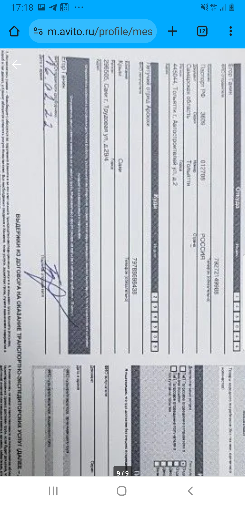
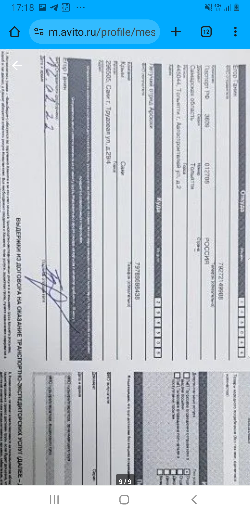

Hier habe ich das Ziel gestellt, hinzuweisen, dass ich
mich am Stichtag auf der Krim befand.
In Rußland gibt es ein 'Flohmarkt' im Internet, das
dem deutsche Portal "Kleinanzeigen" sehr ähnelt.
Sie heißt avito.ru.
Ich habe ein Konto an diesem Flohmarkt, es ist lebendig noch, und
da ist das Konto anzusehen. Es gehört mir bestimmt, z. B., ist
dort mein kleines Foto vorhanden, an dem bin ich zu erkennen.
Also gucken wir mein Konto an avito.ru.
Ich zeige alles mit Bildschirmfotos.
Die Unterhaltung geht natürlich in Russisch, und ich werde Übersetzungen samt Kommentare da und dort einfügen.
-
Am 15. Februar 2022 meldete ich einen Mann namens Jegor aus russischer Oblast Samara.
Damals nteressierte ich mich sehr um ein Paar Beine aus dem Stahl,
mit denen man ein Auto etwas heben kann (für eine Reparatur).
Da sehen wir den Beginn der Unterhaltung.
Ich wollte wissen, ob wirklich um ein Paar geht es oder nur um ein einzige Bein
(er antwortet "ja" und bemaßt mir alle Größen des Geräts, schlagend sich in solchen Richtungen,
die mir kaum ins Kopf kamen):


-
Dann überweise ich das Geld (500 Rubel plus Versendungskosten) nach avito.ru:
-
Nach einer kleiner Pause schickt er mir die Beine:
Schade, dass avito.ru läßt nicht, die Bildern herunterzuladen, aber das Bild zu vergrößern ist es ganz
möglich.
Hier sehen wir, dass er schickt "die Beine" am 16. Februar. Das Ziel ist unseres Städchen Saky, die Hauptstadt
unseres Kreises:
 

-
Am 24. Februar 12:39 gelangt die Sendung die Stadt Saky:

Schade, die Beine habe ich geholt nicht am 24. Februar, sondern am 25. Februar, denn
avito.ru gratuliert mich am 25. Februar 13:42
(und seit diesem Moment muss der Verkaufer das Geld erhalten haben):
Aber man muss denken, dass ich befand mich ganze diese Zeit wenigstens irgendwo in der Nähe.
Und schließlich, mag ich über das Auto erzälen, dem dieses Geschäft gewidmet wurde.
Die Erzälung befindet sich hier.